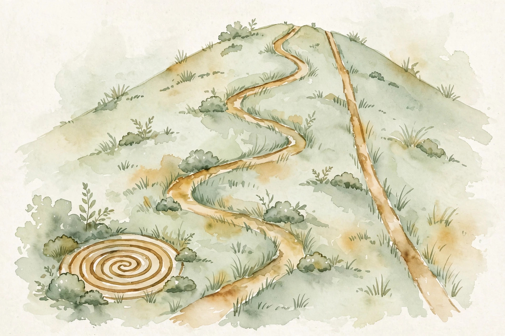
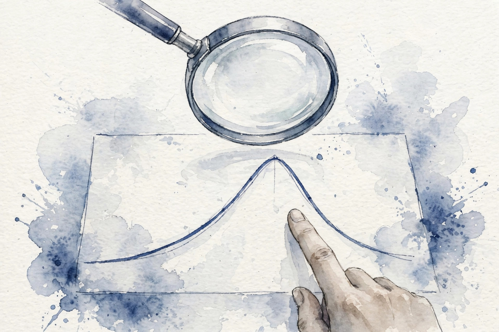
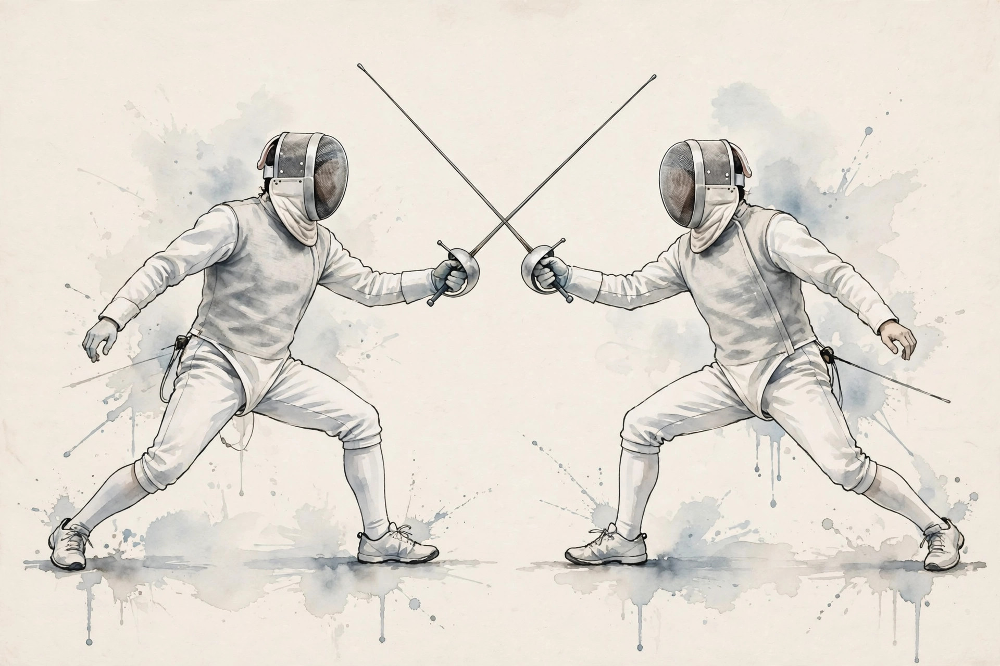

U07 · Acquisition, Thompson sampling, and dueling bandits
How do we act under uncertainty without a hand-tuned exploration knob? Sample a world from the posterior and act as if it were true. Score candidate queries by expected usefulness. And when feedback is only a win or a loss, duel. This unit builds Thompson sampling, acquisition functions, and the dueling bandit.

Sourcing. No full transcript exists for sessions S12 and S13. This companion narrates content/v2/cs329h/lessons/u07_lesson.md. All twelve concepts are taught as independent theory: the lesson marks the sessions PLANNED and every concept PLANNED / SOURCE ATTRIBUTION PENDING.
Lesson inconsistencies disclosed. In C07 the lesson's Contract 5 leaves the Copeland scores as an unresolved placeholder while its Contract 6 reports 0.718, 0.603, 0.452, 0.226. In C10 the lesson's Contracts 2 and 8 leave the stopping round as a placeholder while Contract 6 reports round 43. Both are stated as written. The reported numbers are used on this page.
How to read the tags. Every number carries its lesson section. Anything the companion computes is tagged Illustration. A Interpretation tag marks the companion's own reading of the lesson. Where the lesson leaves a value out, the page says so in words.
From the lesson A fact, number, or mechanism from the lesson.
Illustration Invented by the companion: an analogy, a toy with made-up values, or a what-if. Never lecture content.
Interpretation The companion's reading of why a lesson fact matters. The fact is the lesson's, the gloss is ours.
C01 · Contract 6 Points to the exact lesson section behind a claim or number.
Section 1 · C01, C02, C03
From the lessonC01 · Contract 3, 5, 6
Thompson sampling turns a posterior into actions. Sample a world from the posterior, then act as if the sample were true. Uncertainty becomes exploration automatically: arms that might be best get pulled in proportion to their chance of being best. That is probability matching: P(pull a) = P(a is optimal | data). No epsilon to tune. The lesson toy: 3-arm Bernoulli with Beta posteriors (8,3), (4,4), (2,6). P(arm 1 is best) = 0.850 from 20000 samples at seed 0. TS pulls arm 1 about that often. Lesson figure u07_f01 draws the loop.
From the lessonC02 · Contract 3, 5, 6
Every pull both earns and teaches. The lesson runs three policies on 3-arm Bernoulli [0.7, 0.5, 0.4], T = 300, seed 23: Thompson sampling ends at regret 4.0, epsilon-greedy (0.1) at 5.2, greedy at 89.6. Greedy locks onto an early lucky arm and pays linearly. Epsilon-greedy pays a constant exploration tax. TS explores in proportion to uncertainty and the regret grows sublinearly. Lesson figure u07_f02 draws the three curves.
From the lessonC03 · Contract 3, 5, 6
An acquisition function turns the posterior into a shopping list. UCB is optimistic: mu + k sd. EI is the expected gain over the best so far. PI is the chance of any gain. The lesson toy: f_best = 1.0, candidates (mu 1.2, sd 0.1), (mu 0.9, sd 0.5), (mu 0.5, sd 0.8). Computed: UCB at k = 2 gives 1.40, 1.90, 2.10. EI gives 0.201, 0.153, 0.130. PI gives 0.977, 0.421, 0.266. The three rules rank differently: UCB picks candidate 3, EI picks candidate 1. Lesson figure u07_f03 draws the three curves with markers.

Illustration The acquisition toy. Move k and the browser recomputes UCB for the lesson's three candidates. EI and PI follow the closed forms.
2.0
Scores appear here.
From the lessonC03 · Contract 6 At k = 2 the readout must show UCB 1.40, 1.90, 2.10 and EI 0.201, 0.153, 0.130 with PI 0.977, 0.421, 0.266.
Probability matching: pull each arm in proportion to its chance of being best. P(arm 1 best) = 0.850, so arm 1 gets about 85 percent of pulls.
Greedy regret 89.6 against TS 4.0. The lock-in tax is the price of never exploring.
UCB picks candidate 3, EI picks candidate 1. The acquisition function is a choice about what exploration means.
Section 2 · C04, C11, C12
From the lessonC04 · Contract 3, 5, 6
Regret bounds are promises under assumptions: stationary rewards, bounded noise, a well-specified model. The lesson draws sqrt(T) against linear at T = 1000: 31.6 against 1000 on the unit scale. The sqrt(T) rate says average regret per round goes to zero: the policy learns. Linear says it does not. Break an assumption and the promise voids: the best arm flipping every 100 rounds makes measured regret linear despite the guarantee. Lesson figure u07_f04 draws both curves with the assumption panel.
From the lessonC11 · Contract 3, 5, 6
The compute budget decides the algorithm. The lesson's cost table: Beta-Bernoulli TS costs order k = 4 operations per round. A GP surrogate refit costs order n^3: at n = 200 duels that is 8,000,000 flops. Orders of magnitude apart. Cheap posteriors allow TS. Expensive ones force UCB-on-a-surrogate or random. The budget is a design constraint, not an afterthought.
From the lessonC12 · Contract 3, 5, 6
A fair comparison fixes the world and varies only the policy: same bandit, T = 300, 20 seeds, metric cumulative regret, report mean plus or minus 1.96 standard errors. The lesson's protocol arithmetic: TS mean regret 12.3 with sd 4.0 gives se = 4.0/sqrt(20) = 0.894 and CI [10.5, 14.1]. Anything less is a demo, not an experiment. The values are labeled hypothetical protocol arithmetic in the lesson.
sqrt(T) against linear at T = 1000: 31.6 against 1000. The bound is a promise, the assumptions are the fine print.
8,000,000 flops against 4 operations per round. The compute budget picks the algorithm before the theory does.
Section 3 · C05, C06, C07, C09
From the lessonC05 · Contract 3, 5, 6
Dueling feedback is one bit per duel: we see who wins, never a score. The Bradley-Terry model turns strengths into win probabilities: P(i beats j) = sigma(s_i - s_j). The lesson toy: 4 arms with strengths [1.2, 0.8, 0.3, -0.5]. P(arm 1 beats arm 2) = sigma(0.4) = 0.599. P(arm 1 beats arm 4) = sigma(1.7) = 0.846. The matrix is skew-symmetric in logit space: W_ji = 1 - W_ij. Lesson figure u07_f05 draws the full matrix.

From the lessonC06 · Contract 3, 5, 6
Uncertainty about strengths widens win probabilities toward 0.5. The winner probability averages the BT formula over the posterior: E[sigma(s_i - s_j)]. Jensen's inequality bites: the average of the sigmoid is not the sigmoid of the average. The lesson toy at seed 0, 2000 samples: plug-in P(1 beats 2) = 0.599, posterior-averaged = 0.5930. Plug-in P(1 beats 4) = 0.846, averaged = 0.8360. The plug-in is fast and overconfident. Lesson figure u07_f06 shows both matrices.
From the lessonC07 · Contract 3, 5, 6
A dueling bandit picks two arms per round and observes the winner. The goal is the Copeland winner: the arm that beats the most others, C_i = mean over j of P(i beats j). On the toy the strengths are ordered, so arm 1 beats all pairwise and its Copeland score is highest: 0.718, 0.603, 0.452, 0.226. Strong regret counts rounds where neither duelist is the winner. The lesson's Contract 5 leaves these scores as a placeholder while Contract 6 reports them. Both are stated as written. Lesson figure u07_f07 draws the bars.
From the lessonC09 · Contract 3, 5, 6
Noise sets the irreducible error. With Gumbel noise, P(i beats j) = sigma(u_i - u_j) exactly. The lesson toy: gap 0.4 gives single-duel P = 0.599. A majority vote over 9 duels raises it to 0.731 by the binomial tail. More duels average the noise out at 1/sqrt(n), but the noise never vanishes: even the true best arm loses sometimes.
One bit per duel. The Bradley-Terry model turns strengths into win probabilities, and the matrix is skew-symmetric in logit space.
E[sigma] is not sigma(E). Uncertainty pulls win probabilities toward 0.5: 0.599 becomes 0.5930, 0.846 becomes 0.8360.
Section 4 · C08, C10
From the lessonC08 · Contract 3, 5, 6
Preferential Bayesian optimization optimizes a function it can only compare, never evaluate. The loop: fit a surrogate to pairwise comparisons, pick the next duel by acquisition, repeat. The lesson toy: f(x) = -40(x-0.7)^2 on [0,1], 11-point grid, 20 duel rounds, seed 0. The acquisition duels the Copeland leader against the least-tried challenger. Best-so-far true f rises from -19.600 to -1.600 against a true optimum of 0.0. Lesson figure u07_f08 draws the rising curve.
From the lessonC10 · Contract 3, 5, 6
A stopping rule converts uncertainty into a decision. Rule A: stop when the max posterior winner probability crosses 1 - delta. Rule B: stop at N_max rounds, whichever comes first. The lesson toy at seed 2 with leader-focused duels: P(arm 1 is the Copeland winner) crosses 0.95 at round 43, and the budget of 300 never binds. The lesson's Contracts 2 and 8 leave the round as a placeholder while Contract 6 reports 43. Both are stated as written. Without rule B, a misspecified model can query forever.
Stop at 0.95 confidence or at the budget, whichever comes first. The toy stops at round 43. The budget of 300 never binds.
Wisdom index